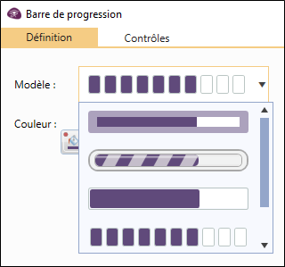

INSÉRER DES BOUTONS D'ACTIONS / BARRE DE PROGRESSION
Le groupe navigation vous permet d'ajouter des boutons d'actions ainsi qu'une barre de progression dans votre formulaire. Pour ce faire :
-
Depuis l'onglet Insertion, groupe Navigation.
-
Cliquez sur Bouton d'action ou Barre de progression.

Insérer un bouton d'action
-
Sélectionnez l'action à associer au bouton d'action que vous allez créer.
Plusieurs types d'actions sont possibles :
-
Naviguer : paramétrer le bouton pour aller vers la page suivante, précédente, vers une page spécifique, un autre formulaire ou encore pour enregistrer la réponse.
Lorsque le bouton permet de passer à la page suivante, vous pouvez le transformer automatiquement en "Enregistrer" sur la dernière page en cochant l'option Transformer le bouton "Suivant en "Enregistrer" sur la dernière page. le texte "Enregistrer" peut être modifié.
-
Imprimer : cette action permet d'imprimer le formulaire choisi.
-
Calculer : permet d'exécuter un calcul lorsque le répondant clique sur le bouton.
-
Afficher : cette action permet d'afficher un fichier (exemple PDF), un site web ou d'effectuer une requête.
-
Effectuer un prompt IA : permet d'exécuter un prompt au clic sur le bouton.
4 actions peuvent être associées à une requête : saisir, modifier, voir les tables et voir les résultats, pour ce faire :
-
Sélectionnez l'action à utiliser.
-
Choisissez le formulaire.
-
Choisissez la langue à utiliser.
REMARQUE : Pour permettre aux répondants de choisir la langue à utiliser, sélectionnez "Demander" depuis le menu déroulant Langue.
-
(Facultatif) Pour rajouter des options avancées, cochez la case Paramètres complémentaires . Consultez la liste des paramètres complémentaires qui peuvent être ajoutés en fonction de l'action.
REMARQUE : Il est conseillé de cocher la case Ouvrir dans un nouvel onglet pour que le répondant puisse continuer la saisie de ses réponses tout en consultant le fichier, le site web ou la requête dans un nouvel onglet.
-
-
Personnalisez le style de votre bouton en modifiant : le modèle, la couleur et la police du texte.

Insérer une barre de progression
-
Sélectionnez le modèle et la couleur de votre barre.
